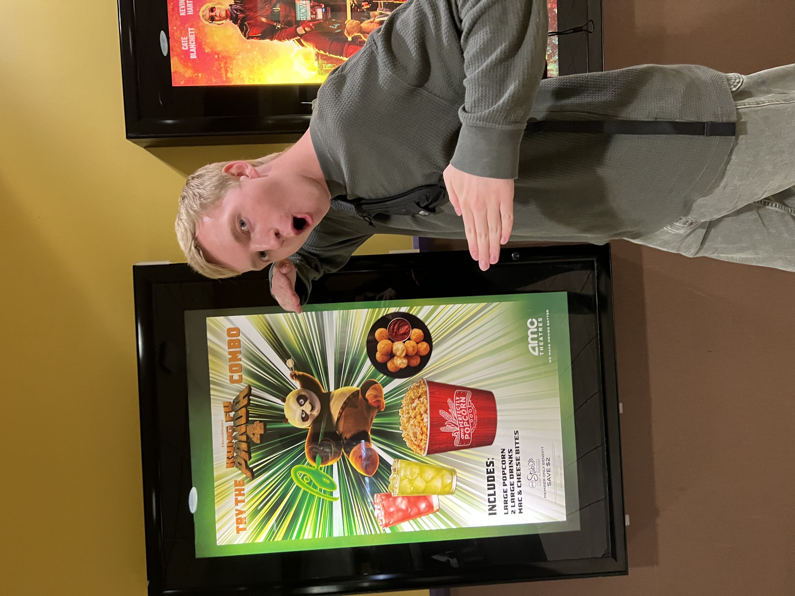
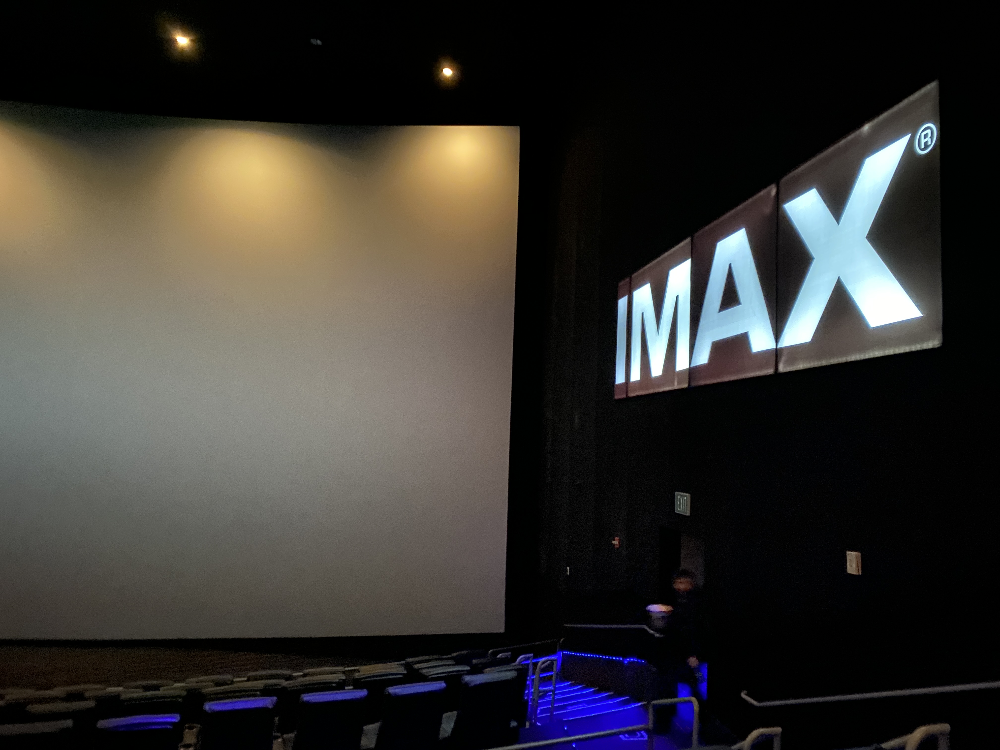
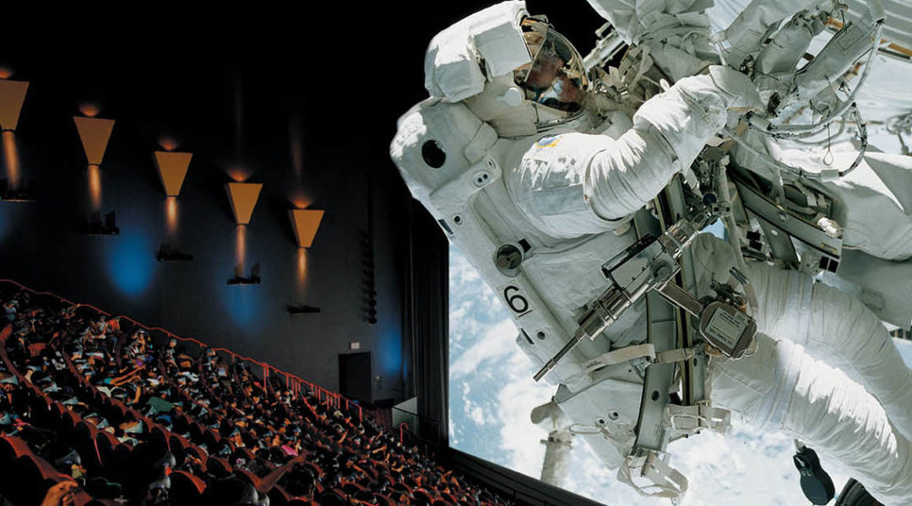

What is IMAX?
IMAX is a system of high-resolution cameras, film formats, film projectors, and theaters known for having very large screens with a tall aspect ratio and steep stadium seating, with the 1.43:1 ratio format being available only in few selected locations.
How Does IMAX Work?
The IMAX format is generically called "15/70" film, the name referring to the 15 sprocket holes or perforations per frame. The film's bulk and weight require horizontal platters, rather than conventional vertically mounted film reels. IMAX film is fed through the projector horizontally. IMAX film is shipped to theaters in several small reels that are spliced into one continuous length that is then wound into a platter, a process that may take hours to complete. Films may be several kilometers in length: Avatar, which was 2:45 hours in duration, was close to 16 km (9.9 mi) long. One minute of IMAX 65mm film can be 400ft and costs close to $1,000. Platters are even handled using special forklifts.
History of IMAX
The most commonly known digital cinema IMAX projection system, debuted in 2008, is designed for use with shorter 1.89:1 aspect ratio screens. In April 2012, IMAX began testing a new 4K laser projection system. Like the 3D film and digital systems, it used two projectors, but it improved over the smaller digital screens by retaining the traditional IMAX aspect ratio and let films be shown on screens 36 m (118 ft) wide or more. In December 2014, IMAX began rolling out its new dual 4K laser projector system, dubbed "IMAX with Laser" and known as IMAX GT, with the first installation occurring at the Cineplex Scotiabank Theatre in Toronto. The system allows digital projection of the 1.43:1 aspect ratio surface of a traditional IMAX screen, but can also be used on other screens such as the 1.90:1-aspect-ratio TCL Chinese Theater.The world's largest IMAX screen currently stands in Leonberg near Stuttgart, Germany and measures 38 by 22 m (125 by 72 ft). Until the Leonberg IMAX opened in 2021, the largest operating IMAX screen was in IMAX Melbourne, located within the Melbourne Museum in Melbourne, Australia, measuring 32 m x 23 m (105 ft x 75 ft).
History of IMAX Pt.2
Before the end of the 1990s, theatrical features were deemed impossible to run in IMAX venues at the time, as there was a technical limitation on the size of the film reel where films had to run around two hours. Originally, IMAX and Pixar considered releasing Toy Story in IMAX 3D, but test results showed that the render resolution could not match the size of the IMAX image.Walt Disney Pictures became the first studio to release theatrical films in the IMAX process. Released on New Year's Day in 2000, Fantasia 2000 was the studio's first IMAX release and the first theatrical feature presented in IMAX theaters.Many recent features have employed IMAX cameras for select scenes; however, before 2018 no full-length feature film was shot entirely using IMAX cameras due to the numerous difficulties presented with the format - the cameras were much larger and heavier than standard cameras and the noise they produced made dialogue recording difficult.The Dark Knight features six sequences (a total of 28 minutes) shot using IMAX.A year later, director Michael Bay was inspired by IMAX's use in The Dark Knight to feature big-screen sequences in Transformers: Revenge of the Fallen.
Analysis From Class
According to Wasson's - The Networked Screen, "IMAX engulfs its spectators, stretching the limits of human vision through its expansive screen and immersive aesthetic. IMAX presents us with a kind of
branded cinema, one that explicitly and implicitly bears the marks of its
network. To repeat: the IMAX screen does not simply occupy the the-
atre; it constitutes the specificity of the viewing experience. These branded screens differentiate themselves in several ways from
the conventionalized branding of dominant cinema. Yet, considering
the small and the big of screen culture reminds us that all screens now
operate in a comparative field that is always, in part, differentiated by
size. On a television, IMAX films hold no promise of engulf-
ment, enrapture, or seduction." For example showing a documentary on Everest on a small tv in class is no longer effective, "Having shrunk by a factor of over three
thousand, the slow and breathtaking surveys of Everest's towering
peaks and deep crevices become stretched, tiresome, and parodic."
Do We Still Have a Need For This?
In a world where over 80% of movie consumption happens on personal devices like laptops and phones it is important we think about the future use of IMAX. Are people going to transition to completely mobile viewing experience? I think there is something to be said about physically going to the place and anticipating these giant images you are going to see in front of you. Shrinking down Christopher Nolan's Oppenheimer on your phone, listening to the atomic blast through your speakers will have nowhere near the same efect as IMAX 100+ foot screens. I think there is definetly a boundary of still experiencing the movie if people can't go to IMAX though. The ease of access of mobile viewing is great and maybe if VR gets innovative enough we could have the same viewing experience from home.
My IMAX Experience
Here is a picture of me at the AMC Burbank 16 going to see Dune 2 in IMAX with Laser. It has an IMAX with single laser screen 37x63ft (1.90:1 aspect ratio shown above). For referance Minnesota only has one IMAX with single laser at the roseville AMC 28x51ft (1.90:1 aspect ratio) and a dome IMAX screen. This is compared to California with 25 IMAX single laser locations, 5 dual laser locations, 2 domes, and a 70mm. The sinlge laser format is is one notch below the dual laser and two notches below what people say is the best IMAX quality of 70mm. A good example of the rarity of those screens is for the recent 70mm IMAX re-release of interstellar there were 8 locations in the US and 2 in Canada that were showing it. So if you were hoping to go to that from MN your best bet would be a 9 hour car ride to Indianapolis. One of my big bucket list things would be to go see an IMAX movie at the AMC Lincoln Square which stands at the 4th biggest IMAX screen in the world at 75.6x101ft almost double the size of what I thought was already big at the Burbank AMC.


Final Future of IMAX

Looking at how big screens have changed our culture I believe IMAX is here to stay. Even if its more gimmacy things like Flyover America where you are strapped in to a seat and shown huge landscapes simulating you flying. Or the Omnitheater at the MN Science Museum where you can view dazzling images projected above you in a huge dome. IMAX is here to stay and people will always have a facination with seeing these images in a way never before.